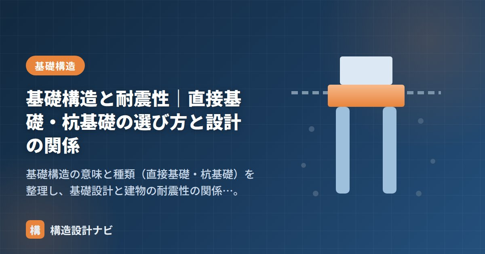

基礎構造と耐震性｜直接基礎・杭基礎の選び方と設計の関係

どんなに上部構造を頑丈に設計しても、足元の基礎と地盤が不適切なら建物は傾き、地震で大きな被害を受けます。この記事では、基礎構造の種類をおさらいしたうえで、基礎設計と耐震性の関係を整理します。
基礎構造の種類（おさらい）
基礎は、建物を支えられる固い地盤（支持層）の深さによって2つに大別されます。
| 種類 | 内容 | 適する地盤 |
|---|---|---|
| 直接基礎 | 基礎が直接、浅い地盤に力を伝える（べた・布・独立） | 良い地盤が浅い |
| 杭基礎 | 杭を打ち、深い支持層まで力を伝える（支持杭・摩擦杭） | 良い地盤が深い |
基礎の選定は、「良い地盤がどれだけ深いか」で決まります。これを知るために地盤調査（ボーリング・N値）を行います。
基礎設計と耐震性の関係
地震時、基礎には上部構造から大きな水平力と鉛直力が伝わります。基礎・地盤に問題があると、次のような被害につながります。
| 現象 | 仕組み | 対策 |
|---|---|---|
| 不同沈下 | 場所によって沈下量が違い、建物が傾く・割れる | べた基礎で面分散、地中梁で連結、地盤改良、杭基礎 |
| 液状化 | 地震で砂質地盤が水のようになり、支持力を失う・建物が沈む傾く | 杭基礎で支持層へ、地盤改良（締固め・固化） |
| 支持力不足 | 建物の重さに地盤が耐えられず沈下 | 接地圧を下げる（基礎を広げる）、杭基礎 |
地震に強い基礎の条件は、建物全体が一体となって動くこと。基礎がバラバラに動くと、上部構造に無理な力がかかります。独立基礎を地中梁で連結したり、べた基礎で一枚の板にしたりするのは、この一体性を確保するためです。
上部構造との関係
基礎に伝わる地震力は、上部構造の重さに比例します（地震力＝重量に比例）。重いRC造ほど基礎・地盤への負担が大きく、しっかりした基礎・地盤が必要です。逆に軽い木造は基礎・地盤への負担が小さくなります。上部構造・基礎・地盤はワンセットで考えるのが鉄則です。
地盤調査の報告書を見るとき、私がまず確認するのはN値の数値そのものより支持層の連続性です。ボーリング1本だけで支持層が一様と判断すると不同沈下のリスクを見落とすことがあるため、敷地内で複数点の調査結果を突き合わせる癖をつけています。
直接基礎と杭基礎の使い分け（図解）
どちらを選ぶかは、建物の重さを支えられる固い地盤（支持層）がどの深さにあるかで決まります。
液状化はなぜ起きるのか
耐震上とくに怖いのが液状化です。ゆるく堆積した砂の地盤で、地下水位が高い場所に起こります。
- 通常、砂の粒どうしが噛み合って建物を支えている。
- 地震の揺れで粒の噛み合いが外れ、粒の間の水（間隙水）の圧力が急上昇する。
- 砂粒が水に浮いた状態になり、地盤が液体のようにふるまって支持力を失う。
- 重い建物は沈み込み、軽い地中構造物（マンホール・タンクなど）は逆に浮き上がる。
対策は、①杭で液状化層を貫いて支持層に力を伝える、②地盤改良で砂を締め固める・固化する、③地下水位を下げる、などです。液状化が想定される地域かどうかは、自治体が公表しているハザードマップである程度あたりをつけられます。
よくある質問
Q1. べた基礎なら地震に強いと考えてよいですか？
べた基礎は底面全体で建物を支えるため接地圧が小さく、不同沈下に対して有利です。ただし「べた基礎にすれば安心」とは言えません。地盤そのものが軟弱だったり液状化のおそれがある場合は、べた基礎でも建物ごと沈下・傾斜します。基礎形式の選択より先に、地盤調査で地盤の性状を把握することが重要です。
Q2. 独立基礎を地中梁でつなぐのはなぜですか？
独立基礎はそれぞれが単独で建物を支えるため、地震時に基礎ごとにバラバラに動こうとします。地中梁で連結すると基礎全体が一体となって動き、上部構造に無理な変形が生じにくくなります。また、柱脚に生じる曲げモーメントを地中梁が負担できるため、基礎の回転も抑えられます。
Q3. 木造住宅でも地盤調査は必要ですか？
必要です。木造は建物が軽く地盤への負担は小さいものの、軟弱地盤では不同沈下が起こります。住宅では簡易なスウェーデン式サウンディング試験（SWS試験）が広く用いられ、この結果に基づいて基礎形式や地盤改良の要否を判断します。地盤保証を付ける場合も調査は前提条件になります。
まとめ
- 基礎は支持層の深さで直接基礎（浅い）と杭基礎（深い）に分かれる。
- 耐震上の敵は不同沈下・液状化・支持力不足。べた基礎・地中梁・杭・地盤改良で対策する。
- 基礎は建物全体が一体で動くことが重要。上部構造の重さとセットで設計する。